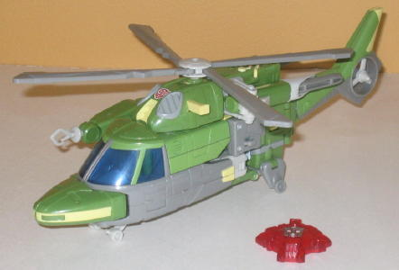
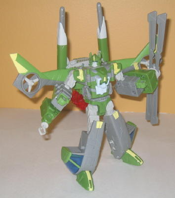
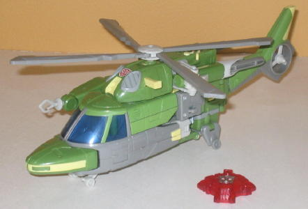
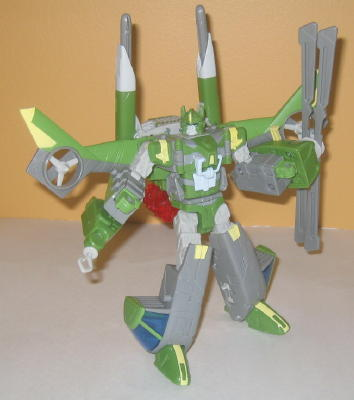
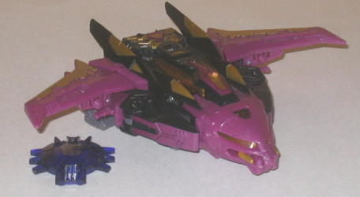
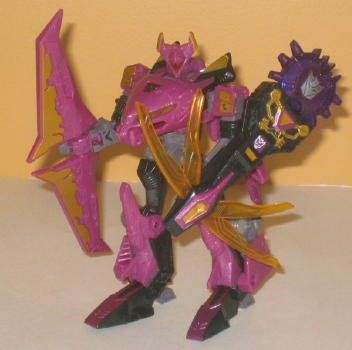

 
Allegiance : Autobot
Size : Voyager
Difficulty of Transformation : Medium
Color Scheme : Gray, jungle green, and some light pale gray, pale yellow, red, and transparent blue
Rating : 9.4
Set Price
: $30 U.S.
Series
: War Within
 Springer
Springer


Allegiance
: Autobot
Size
: Voyager
Difficulty of Transformation
: Medium
Color Scheme
: Gray, jungle green,
and some light pale gray, pale yellow, red, and transparent blue
Rating
: 9.4
(NOTE: Because this is a repaint, this is not a full-blown review. This mainly covers any changes made to the mold and the color scheme, and merely compares it to Cybertron Evac. For a review on the mold itself, read the review of Cybertron Evac here .)
Springer here is an homage
to the G1 character of the same name, who was a triple changer and could
become either a futuristic helicopter or an armored vehicle. This version
of Springer can just become a helicopter, but the color scheme is spot-on
springer-- the green and gray, as well as the bits of yellow, make for
a great homage. However, as a color scheme in and of itself, it's not all
that great. It really needs more dark colors to contrast the pale gray
& light gray, as well as the pale yellow. The green isn't really what
I'd call bright, but it's not dark either, so that doesn't really do the
job. The only "dark" color on Springer is the transparent blue, but that's
used pretty sparingly. Replacing some of the gray with more of the blue--
or perhaps even red, though that would have lessened the homage a bit--
might have helped some. Still, Springer has plenty of paint apps, even
if they aren't all used to the best effect when it comes to contrast--
decorative stripes and details abound, particularly when it comes to the
yellow.
No mold changes have
been made to Universe 2.0 Springer, though the mold's Cyber Key has been
replaced with the standard transparent red Autobot Cyber Key that has been
used for recent Cybertron repaints.
 Ratbat
Ratbat


Allegiance
: Decepticon/Ultracon
Size
: Deluxe
Difficulty of Transformation
: Medium
Color Scheme
: Black, dull glittery
fuchsia, and some dull purplish gray, dull metallic gold, metallic fuchsia,
and dull transparent yellow
Rating
: 9.6
(NOTE: Because this is a repaint, this is not a full-blown review. This mainly covers any changes made to the mold and the color scheme, and merely compares it to Cybertron Sideways. For a review on the mold itself, read the review of Cybertron Sideways here .)
We haven't really had
a new Ratbat for some time now, and for good reason-- no mold has really
fit the cassette-bat. This one is quite an ingenious pick for the character,
though, as it's a "pre-Earth" form, so an outright bat form doesn't make
any sense-- instead, Ratbat's got a normal mode and an alternate mode that
looks both rodent-ish (around the cockpit "face") and bat-like (the wings
in vehicle mode and on the sides of the head in robot mode). It definitely
looks evil, too, which certainly fits the character. It's almost hard to
believe that this wasn't the mold's original use. Ratbat's overall color
scheme is quite good-- he keeps the nice black-and-fuchsia color scheme
of the G1 toy, and adds in quite a good amount of gold for a nice contrasting
color. Using a grayish purple for some small parts of the robot mode was
also a nice choice, as it fits in well against both the black and fuchsia.
Ratbat also has plenty of paint apps-- you won't find any large areas of
plastic unpainted on this guy-- the number of gold and black paint apps
is particularly impressive. What I think is the most ingenious thing done
to this repaint, though, is how they implemented Cybertron Sideways' faction-switching
Cyber Key gimmick to make perfect sense-- when you put in the Cyber Key,
Ratbat's faction symbol changes to the Ultracon symbol, a sub-faction of
Decepticons during the War Within comic miniseries. Nice obscure nod, there,
and it works since Ratbat's obviously both a Decepticon and, more specifically,
an Ultracon.
No mold changes have
been made to Universe 2.0 Ratbat.
Springer and Ratbat are both great molds, and Ratbat is a particularly ingenious homage, so if you don't have any prior versions of these molds, go for this 2-pack if you can find it. Color-wise, I think Ratbat is slightly inferior to Cybertron Sideways, however, and though I think Springer is better than Cybertron Evac, he falls short of Universe 2.0 Blades in terms of colors.
Reviews by Beastbot
(NOTE: In the U.S., this was supposed to come with a reprinted Transformers: The War Within #2 comic, but many packages have the comic for the other Vs. pack in the assortment instead, the Transformers: Target: 2006 #3 comic. Outside of the U.S., even though the package indicated that a comic was included, it was in fact not for some legal reasons.)